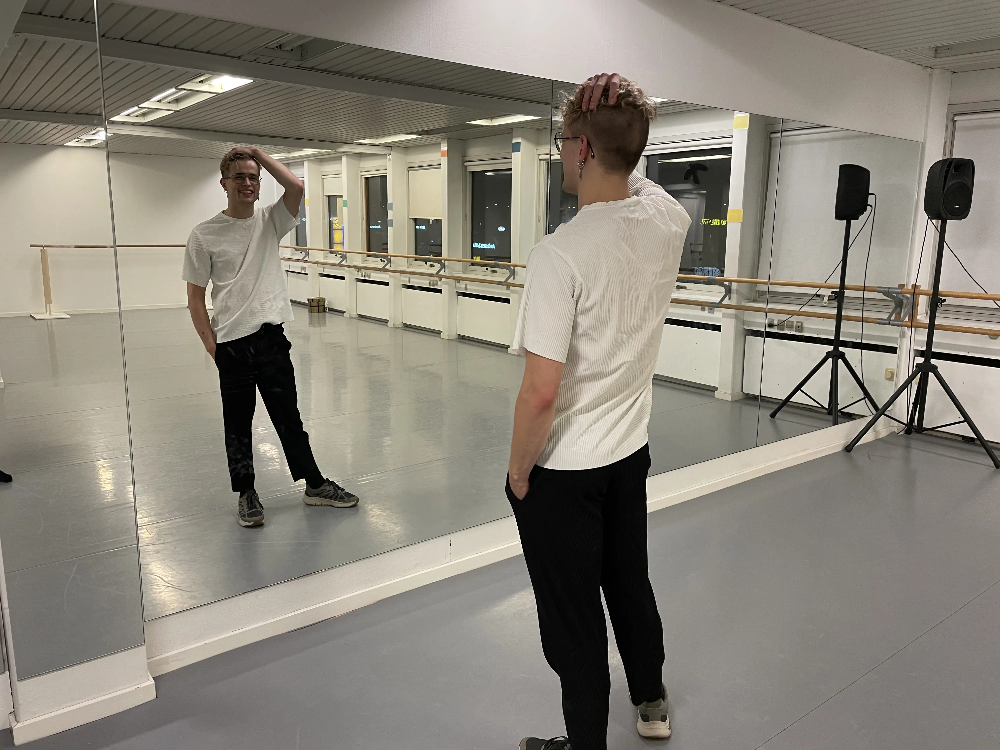
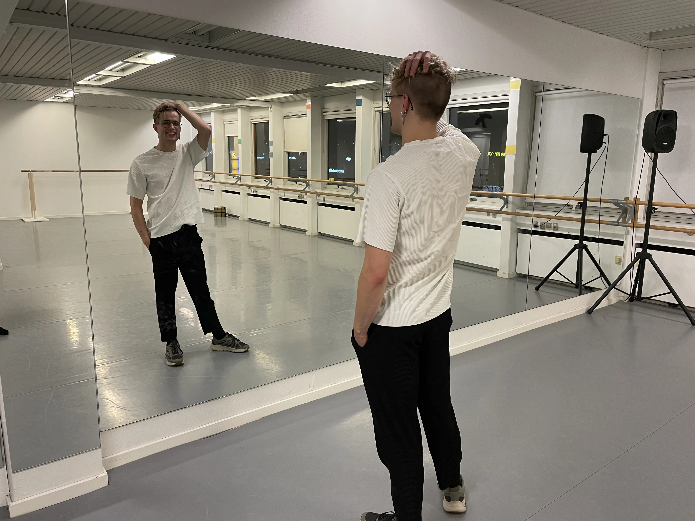
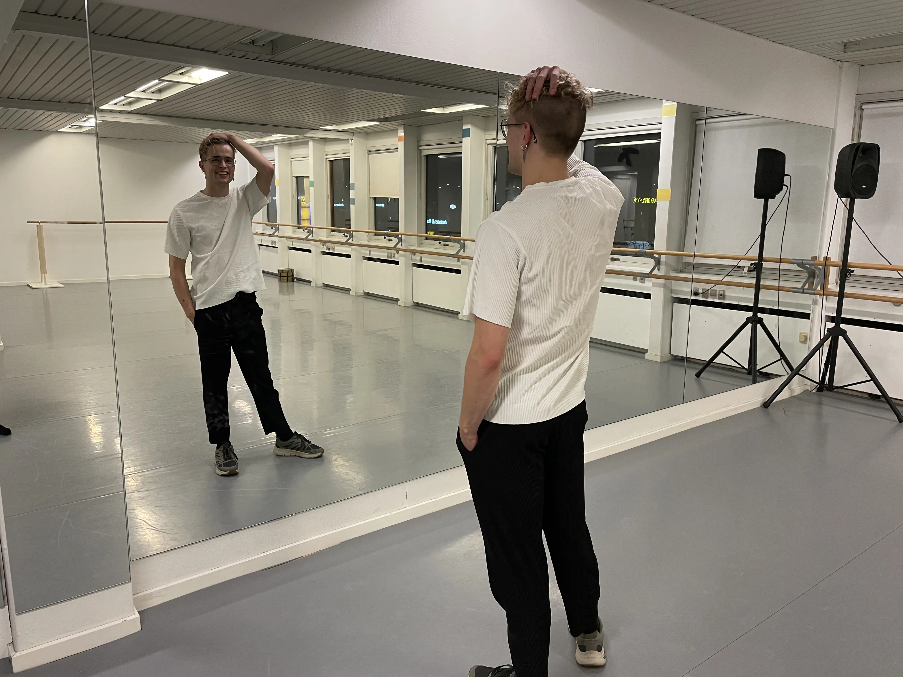

Billeder
Mød Michael Sebastian Møller Hammerbo.
Michael er 25 år og hans passion er dans. Han har danset i 20 år.
Han underviser, koreografere og performer.

 

Mød Michael Sebastian Møller Hammerbo.
Michael er 25 år og hans passion er dans. Han har danset i 20 år.
Han underviser, koreografere og performer.
